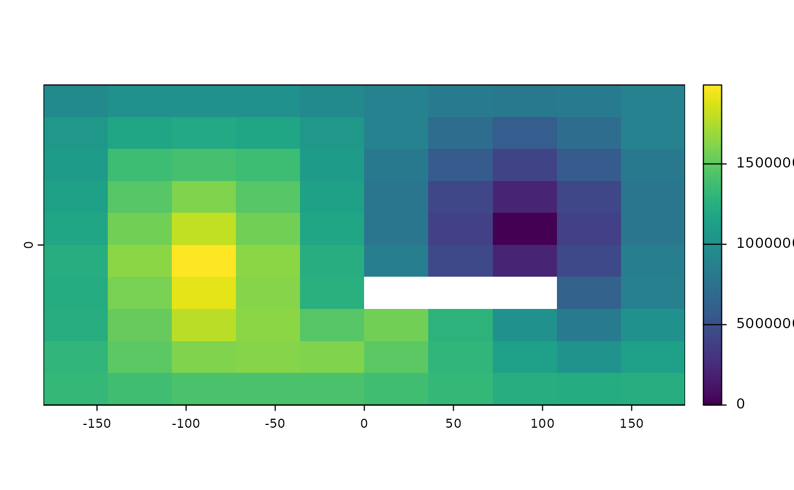
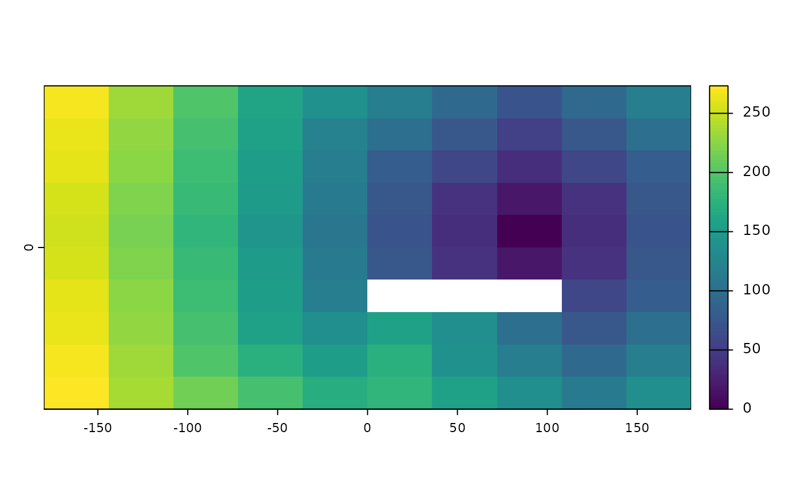

gridDist.RdThe function calculates the distance to cells of a SpatRaster when the path has to go through the centers of the eight neighboring raster cells.
The default distance (when scale=1, is meters if the coordinate reference system (CRS) of the SpatRaster is longitude/latitude (+proj=longlat) and in the linear units of the CRS (typically meters) in other cases.
Distances are computed by summing local distances between cells, which are connected with their neighbors in 8 directions.
The shortest distance to the cells with the target value is computed for all cells that are not NA. Cells that are NA cannot be traversed and are ignored, unless the target itself is NA, in which case the distance to the nearest cell that is not NA is computed for all cells that are NA.
# S4 method for SpatRaster
gridDist(x, target=0, scale=1, maxiter=50, filename="", ...)SpatRaster
numeric. value of the target cells (where to compute distance to)
numeric. Scale factor. For longitude/latitude data 1 = "m" and 1000 = "km". For planar data that is also the case of the distance unit of the crs is "m"
numeric. The maximum number of iterations. Increase this number if you get the warning that costDistance did not converge. Only relevant when target is not NA
character. output filename (optional)
additional arguments as for writeRaster
SpatRaster
# global lon/lat raster
r <- rast(ncol=10,nrow=10, vals=1)
r[48] <- 0
r[66:68] <- NA
d <- gridDist(r)
plot(d)

# planar
crs(r) <- "+proj=utm +zone=15 +ellps=GRS80 +datum=NAD83 +units=m +no_defs"
d <- gridDist(r)
plot(d)

# distance to cells that are not NA
rr <- classify(r, cbind(1, NA))
dd <- gridDist(rr, NA)